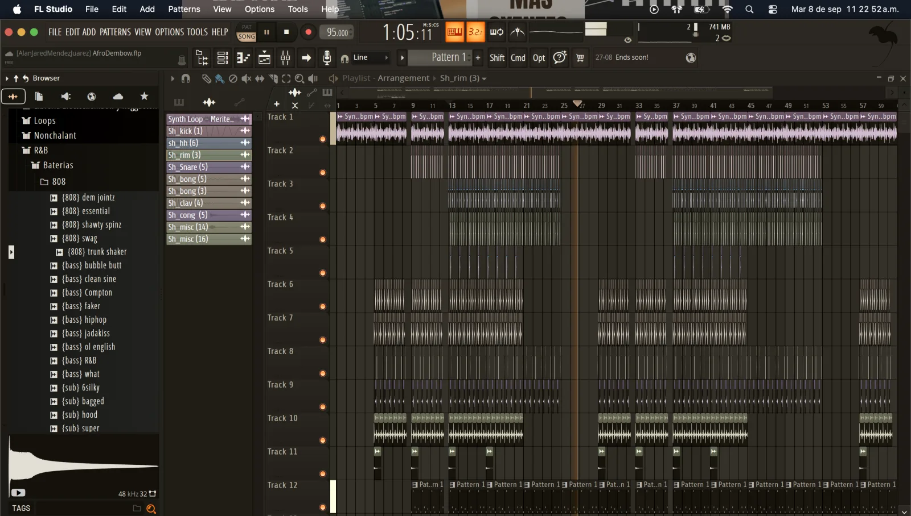

Producción, edición y mezcla
Grabación y edición de voces, reducción de ruido, ecualización, compresión y balance entre voz e instrumental. Preparación de piezas musicales, entrevistas, podcasts y voz hablada.
- Automatizaciones, reverberación, delay y efectos
- Auto-Tune y adaptación de tempo
- Masterización y control de volumen final
- Exportación en WAV, MP3 y formatos de entrega
